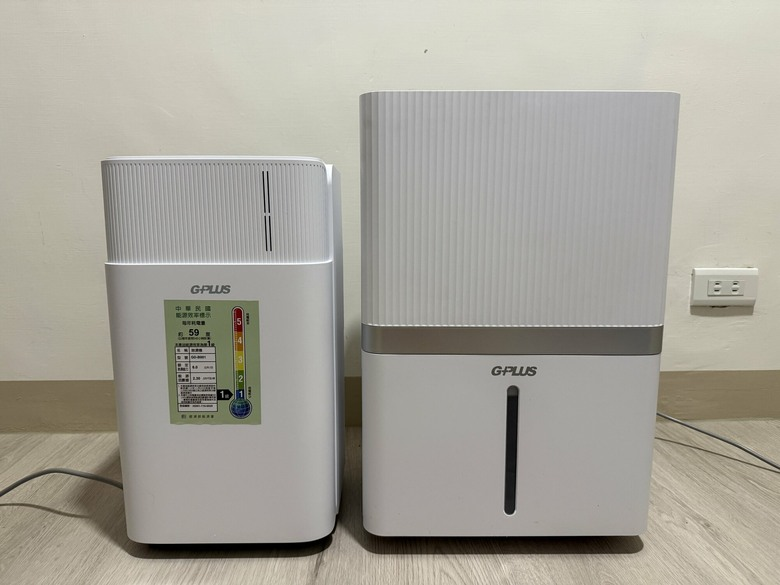
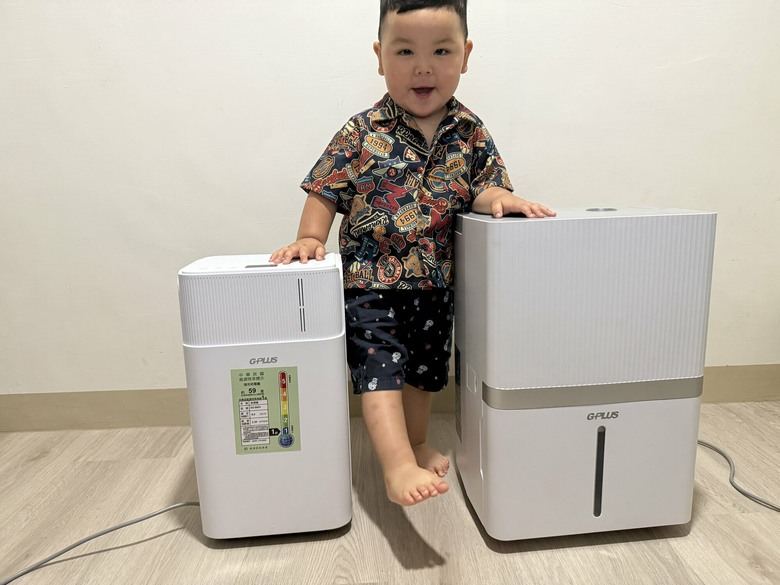

前言
最近窗外又開始飄雨了。每年五月一報到，台灣就會自動切換成「水族箱模式」：衣服晾三天還在滴水、棉被聞起來有股說不上來的「夏天的潮味」、衣櫃深處偷偷蓋了一棟黴菌套房、鞋櫃打開像在開驗屍報告。我家還曾經發生過全家圍著一條牛仔褲輪流摸，集體討論「這真的乾了嗎？」的詭異儀式。住在台灣，雨季根本不是季節，是房東——它每年都來收房租，繳的不是錢，是你的耐心。
去年我硬撐過整個雨季，得到的結論是：除濕機這東西，「一台打天下」其實有點為難。家裡那麼大，一台機器要兼顧客廳、又要管鞋櫃、衣帽間、書房角落，常常顧了主場、漏了死角；顧了死角，又主場淪陷。今年我決定換打法，找上 GPLUS 的「居不可濕」系列雙機組合：一台 6 公升負責「小空間滲透戰」、一台 12 公升負責「主場震懾戰」，兩台分工，雨季就不用再委屈自己當吸濕海綿了。
順便快速介紹一下 GPLUS：它是拓動企業旗下的家電品牌，台灣團隊操刀產品規劃，近幾年在小家電的「外型」跟「性價比」這兩件本來八字不合的事情上，喬得意外地好。這次雙機都是 2026 全新一級能效，雙機合計政府節能退稅補助最高可以拿到 $1,700，雨季再怎麼長時間開，電費單寄來也不會讓你心律不整。
接下來這篇，我就用「一個雨季前線老兵」的角度，從外箱、規格、設計，一路講到實際開下去的感受，把這對雙機的真本事帶你看一遍。
規格
照慣例先把規格攤開來，雙機並列方便你判斷：是要先入手一台、還是乾脆雙機到位。| 項目 | GD-B001（6L） | GD-B002（12L） |
| 機能種類 | 壓縮機 B 式 | 壓縮機 B 式 |
| 額定除濕能力 | 6.0 公升/日 | 12 公升/日 |
| 適用空間 | 套房、衣帽間、鞋櫃、死角 | 客廳、臥房、開放式空間、乾衣 |
| 能源效率 | 2026 一級能效 | 2026 一級能效 |
| 能源因數值 | 2.30 L/kWh | 2.90 L/kWh |
| 每年耗電量 | 約 59 度 | 約 93 度 |
| 出風方式 | 側吹式（右側出風） | 上吹式（自動擺動） |
| 水箱設計 | 抽屜式水箱（一抽即取） | 正面抽屜式水箱（免轉機身） |
| 移動性 | 10 kg 輕量＋萬向輪＋雙側把手 | 萬向輪＋隱藏式把手 |
| 使用模式 | 除濕／乾衣／睡眠 | 除濕／乾衣／睡眠 |
| 智慧顯示 | LED 環境濕度即時顯示 | LED 環境濕度即時顯示 |
| 安全設計 | 水滿自動停止、按鍵鎖、連續排水 | 水滿自動停止、按鍵鎖、連續排水 |
| 冷媒 | R-134a（85g） | R-134a |
| 適用溫度 | 5～35°C | 5～35°C |
| 機身尺寸 | 255 × 230 × 446 mm | 355 × 275 × 522 mm |
| 重量 | 約 10 kg | 約 14 kg |
| 製造年份 | 2026 年 | 2026 年 |
| 退稅補助 | 一級能效節能退稅 | 一級能效節能退稅 |
開箱
老實說包裝就是簡單明瞭，大大的把規格跟特色寫在外箱上，很台式風格但畢竟是個日常家電，簡單才是最好的包裝。

保麗龍把主機卡得超穩，配件也很單純：主機、水箱、電源線、說明書，沒有那種「拆開一箱、裡面掉出十包零件」的災難現場。對 3C 苦手或想買來送長輩的人很友善，基本上拆開、插電就能用。
一台小、一台大。小那台機身窄，剛好可以塞進牆角、櫃子旁邊那種空間有限的位置；大那台寬一點，比較適合放客廳或臥房這種空間大的地方。就是看你要顧的地方多大去選，沒什麼複雜的。
GD-B001 6L
先看小機。整體是純白機身、比例修長、前面有一條細細的濕度指示燈，綠色(46~64)/藍色(<45)/紅色(>65)根據不同濕度來顯示，平常不開機看起來像極簡風的家飾，開機才會微微亮一條綠光，蠻有未來感的。
這台最值得提的不是規格上的數字，是它的身材。窄、薄、佔地少，可以擠進去的地方比想像中多，像是窗邊縫隙、書桌旁邊、鞋櫃前面、衣帽間角落，或套房裡本來就沒什麼空間的死角，全部都收得下。住小坪數的人應該特別有感，再強的除濕機如果塞不進你想擺的位置，也只是裝飾品。
側吹式是這台小機型身上最關鍵的設計。
出風口開在右側下半部，乾燥空氣會以接近平行於地面的方向直接送出來，可以把風吹進櫃子裡、推到牆角，貼著地面繞一圈。
台灣家裡最容易潮濕的地方，像是櫃子底下、牆角、鞋櫃內側、衣帽間角落、書房深處，大多都集中在這個高度。側面出風剛好打得到這些位置，對付死角比較有感。家裡有開放式衣帽間，或鞋櫃常有怪味、書房角落容易長壁癌的人，應該會特別有感覺。
順便講一個小細節，垂直柵格的出風口比水平的更不容易積灰塵，平常用衛生紙擦一下就乾淨，這對懶得清潔的人也算加分。
翻到背面是大面積進氣口，外面罩著卡扣式濾網，手指扣著一拉就下來，沖一沖、晾乾、裝回去，五分鐘搞定。記得定期清，不然濾網會在裡面默默卡灰塵，除濕效率慢慢掉、電費悄悄上升，等於繳「拖延稅」。
背面右下角還藏了連續排水孔，要長時間放固定位置（例如浴室、書房角落）就接上水管轉開，24 小時除濕不用倒水，倒水這件事直接外包給水管。
我覺得比較麻煩的是，需要清濾網的時候要先拉出水箱，小小扣分。
水箱兩台都是抽屜式設計，意思是它不像傳統水盒那樣要整個往上抬起來、再端著走，而是像拉抽屜一樣往外抽出來，倒完水再推回去就好。位置上還是在機身下半部，所以拉的時候還是會需要彎個腰，但少了「往上抬」這個動作，操作會順一點，水也比較不會在過程中晃出來。
能效這塊把標章特寫補給你看。
小機是 2026 一級能效，能源因數值 2.30 L/kWh，以年使用 540 小時計算，每年耗電量大約 59 度。對長期開除濕的人來說，一級能效跟其他級別累積下來的電費差距會比較有感。另外一級也符合政府節能退稅的申請資格，可以再省一筆。
整機 10 公斤、機身尺寸 255 × 230 × 446 mm，加上底部萬向輪跟雙側把手，搬上樓、跨門檻、推進浴室都很輕鬆。對住套房或需要常常換位置的租屋族來說，這個重量是好處理的。
GD-B002 12L｜上吹擺動風，雨天的「隱形烘衣機」
接著看 12 公升這台。它是這個系列的主力機種，定位很明確，就是放在客廳這種大一點的空間當主要除濕力，雨天還可以兼當乾衣機用。跟小機擺一起，整體比較寬，正面有一條直向的水位顯示窗，會直接顯示當下水量。
機身大一點是因為它要容納更大的壓縮機跟水箱，才撐得起一天 12 公升的除濕量。
這台最值得講的設計在機身頂部。平常不開機的時候，整個頂蓋是一片乾淨的白色板子，看起來像極簡風的方塊家電。一旦開機，頂蓋會自動掀起來，露出底下的擺動式導風板，乾燥空氣會從上方往斜上方甩出去，搭配自動擺動讓整個空間的空氣對流起來。頂蓋掀開後可以看到那顆綠色的，就是它的環境濕度顯示。實測時那天一開機就秀出 80% 起跳，難怪整間像進了三溫暖，開除濕模式跑一個下午，數字一路 80慢慢往下降到54 ，一直往下掉。看著濕度被機器一點一點減少的過程，真的很開心。
人體最舒適的室內濕度落在 50~60%，這台把空間拉進舒適區的速度蠻有感的，12 公升的除濕力擺在開放式客廳、餐廳一起的格局都壓得住。
控制面板做在頂蓋前緣，觸控式按鍵，圖示清楚好懂，包含電源、模式（除濕、乾衣、睡眠）、風速、定時、擺風、按鍵鎖。我最喜歡正中間那塊 LED 濕度數字，會即時顯示當下環境濕度。以前都是憑感覺判斷家裡有沒有比較悶，現在直接看數字決定要不要開、目標濕度設多少，相對直覺很多。順便講一下按鍵鎖。家裡有小孩或寵物的人應該都懂那種設定好半夜被誤觸改掉的崩潰感。按鍵鎖開下去，整片面板就會鎖住，不會被經過的小手或腳掌按到讓設定跑掉。對家有好奇心很重的小朋友或寵物的家庭來說，蠻實用的。這台水箱是從正面抽出來的抽屜式設計。倒水的流程很單純，蹲下、拉開水箱、端去倒、再推回去就好，機器本身完全不用移動。整個倒水動作都在正面完成，操作很直觀。
這台比小機重一點，所以「移動」就更關鍵。GPLUS 在頂部設了一個隱藏式把手，平常完全藏在機身輪廓裡看不出來，要搬的時候把它扳起來、手指扣著就能提，這個小心機真的細膩——平常看起來就是一塊乾淨的方塊家電，要動的時候一秒變身手提行李。
底部四顆萬向輪，輕輕推就會跟著跑。雖然大機本身有 14 公斤左右，但靠著萬向輪在客廳、臥房、浴室之間移動完全不用抱，整台像在地板上玩花式溜冰。提醒一下：跟所有壓縮機一樣，搬動後建議靜置 30 分鐘再開機，讓冷媒回流穩定，這樣對壓縮機壽命比較好。
濾網也是卡扣式，手指扣著一拉就下來，水龍頭下沖一沖、晾乾、裝回去。沒工具、沒零件、沒複雜卡榫，五分鐘搞定。濾網建議定期清，太髒會影響除濕效率跟耗電量。
雙機協作｜小機顧死角、大機顧主場
講到雙機組合，常會有人問：「我家又不大，一台不就好了？」我以前也是這樣想，結果用下來反而覺得雙機分工的爽度遠超預期。我的配置長這樣：主場機固定駐紮在客廳，當鎮場主帥；雨天晚上洗完衣服晾室內，就把它推到衣物旁邊，切到乾衣模式跑一整晚，隔天起床整排都乾透。它真的就是雨季的「隱形烘衣機」——比起烘衣機高溫硬烘，這種低溫除濕乾衣對針織、羊毛、機能衣這些怕縮水的料子超友善，等於半台烘衣機免費附贈。
小機則被我派去執行「滲透任務」：丟到主場機顧不到的死角——衣帽間、鞋櫃前、書房角落、浴室。它身形纖細、移動方便、能耗又低，需要時推過去開兩三小時，平常就安靜地縮在角落，存在感低到我有時候差點忘記它在那。
主場有大機鎮場、死角有小機滲透，整個家從客廳到鞋櫃都不會放過。雙機都是一級能效，分擔下來的電費反而比一台 18 公升大機整天硬撐還省。等於兩台一起組成除濕界的雙打組合：一個負責長球底線壓制，一個負責網前殺球補刀，潮濕想偷打都偷不到。
實際使用體驗
規格再漂亮，最終還是要看實際開下去是什麼感受。這段就是我這幾天實測下來最有感的幾個點。
除濕力與速度
雨天一早起床，客廳濕度直接秀出 80% 以上，把主場機開到除濕模式跑一個上午，數字就從 80→60→50 一路往下掉。下午回家整間都乾爽了。比較有感的是「黏度」消失：以前家裡濕度高的時候，沙發摸起來會有點黏黏的、地板光腳走會吸住一下，這種「肉眼看不到、皮膚很有感」的不適，除完濕之後全部消失，像剛把家拆解、洗澡、晾乾，再裝回去一樣。
乾衣模式
住台灣的人都懂那種痛：連下一週雨、衣服晾三天還是有股說不出來的潮味，穿上身總覺得「這條牛仔褲是不是有自己的人格」。把主場機推到晾衣區開乾衣模式，晚上洗好衣服掛上去、隔天起床整排乾透。對家裡沒烘衣機、又懶得一直摸衣服判斷有沒有乾的人來說，這台就是雨季救星。
噪音
這應該是很多人最在意、卻最少人講的點。自動模式下還是聽得到風聲，畢竟它在認真上班；但要在房間睡覺時切到睡眠模式，運轉音會降下來，安靜很多。客廳放著看電視不會吵、臥室過夜開睡眠模式也都在可以接受的範圍內。
水箱容量與連續排水
兩台都採用大容量水箱搭配抽屜式設計，倒水的頻率明顯比以前的舊機種少。如果你打算固定放某個位置長時間開，兩台都支援連續排水：背面接上排水管轉到 OPEN，水就直接外送到地漏，倒水這件事完全可以從你人生 to-do list 上劃掉。對久開的人或想放浴室的人來說超方便。
潮濕環境是塵蟎跟黴菌的高級民宿，家裡有過敏兒或小小孩的會特別有感。把濕度穩定壓在 50~60%，全家住起來都比較舒服，過敏症狀也比較不會三天兩頭來打卡。雙機外觀都是圓潤的方塊、沒有銳利邊角，純白機身擺在有小孩的空間看起來也比較放心；再配上按鍵鎖，設定好直接鎖死，就不用每天上演「除濕機到底為什麼又被改成乾衣模式」的家庭推理劇。
總結

雨季實測一輪下來，GPLUS【居不可濕】系列給我最深的印象是，它把除濕這件事拆成兩個情境去處理，小空間死角給 6 公升，客廳跟乾衣給 12 公升，而不是逼你拿一台機器去打所有的戰場。如果要我用一句話總結，就是一台顧到你常用的空間，一台顧到平常會被忽略的角落。雙機共同優點：- 雙台都是 2026 新一級能效，雙機合計政府節能退稅最高 $1,700
- 抽屜式水箱，往外抽拉比傳統往上抬端的水盒順手
- LED 即時顯示環境濕度，把感覺變成看得到的數字
- 三種模式（除濕／乾衣／睡眠）一次到位
- 按鍵鎖設計，家有小孩寵物也安心
- 水滿自動停止、支援連續排水，日常使用更省心
- 底部萬向輪，移動位置完全不費力
- 外觀純白簡約，擺客廳臥房都不違和
6L 小機的記憶點：- 獨家側吹式設計，專治牆角、鞋櫃、衣帽間死角
- 10 kg 極致輕量，搬動跨門檻完全 OK
- 能源因數值 2.30 L/kWh，每年耗電僅約 59 度
- 機身修長窄體，套房、租屋、小坪數的最佳室友
12L 大機的記憶點：- 頂部自動掀蓋擺動風，全屋空氣對流不留死角
- 能源因數值 2.90 L/kWh，雨天開整天也不心痛
- 正面抽屜式水箱，免轉機身就能倒水
- 12 公升除濕量＋乾衣模式，雨季的隱形烘衣機
缺點（誠實說）：- 純白機身好看，但時間久了需要定期擦一下
- 按鈕沒有背光，在沒開燈的情景下，長輩不好判斷使用
那它適合誰？- 想一次解決客廳除濕＋衣帽間／鞋櫃死角的家庭
- 梅雨季有大量晾衣需求、又不想買烘衣機的家庭
- 想申請節能退稅、預算要精打細算的小資族
- 家裡有長輩，因為只要看顏色就知道濕度、希望機器輕便好移動的家庭
- 家有小孩或寵物，需要按鍵鎖防誤觸
- 租屋族需要輕量好移動、機身省空間的人
整體而言，如果你住套房或小坪數、預算有限，6 公升那台先入手就很夠用，側吹式加上 10 公斤輕量是它最有記憶點的組合。如果你住中大坪數、又常有晾衣需求，12 公升那台會更適合當主力，再搭一台 6 公升顧角落，整個家就都顧到了。再過沒多久又是雨季。每年看著衣服晾三天還在滴水、棉被聞起來怪怪的、櫃子角落開始長東西，心情也會跟著潮起來。今年我家準備這兩台一起上工，提早把除濕這件事搞定，希望大家今年也都能舒服度過梅雨季。